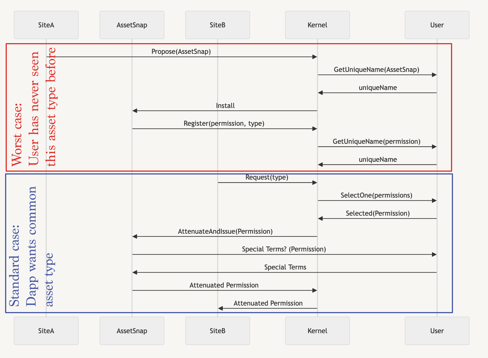

EIP-3074 as a Path to Permissionless Permissions
If we want computers to work for us, we need to be able to issue permissions to and from machines, but we can only grant permissions that we know about, and can only issue them as faithfully as the computers that hold them for us. Permissionless safety depends on us building a permission system that is as easy to reason about as it is to use. Some people seem to have conceded that safety in a permissionless ecosystem is hopeless, but in this article, I hope to change some of their minds.
I'm going to start a bit general to establish the principles I'm building on, and then I'm going to get more specific, culminating in a rough technical specification along with some code that can be tried out today.
A dilemma has been brought into stark relief by recent debates in the Ethereum ecosystem around EIP-3074. It defines a special signature type that would allow a conventional Ethereum account ("externally owned account" or EOA) to grant its full authority to some code published on Ethereum. The dilemma that critics seem to bounce between can be summarized as:
- A signature that can grant all of a user's authority would be too powerful to grant to anything, and a violation of the principle of least authority.
- A wallet that exposes an interface that is less permissive than a signature that can grant all of a user's authority is a form of gatekeeping, and is in ideological opposition to blockchain or decentralized technology.
I'm glad this dilemma has come up. It raises an important question in computer system design in general. It's not remotely only present in Ethereum, or EIP-3074.
Windows, and MetaMask to date, have arguably both thrived while opening the door to significant risk as a result of high openness with low readability:
Windows is a General Purpose Operating System designed for extensibility and user changes in a time before modern viruses. It is an incredible system. It Won. But there are hundreds, thousands of way to “extend” it built on innocence that made it, that malicious programs exploit.
— SwiftOnSecurity (@SwiftOnSecurity) April 13, 2024
The most popular alternative security model appears to be Apple's closed ecosystem, with Tim Cook claiming on the stand the only way to keep iOS users safe is by keeping the app store closed, so it's understandable that these two philosophies might appear like the only options available.
These aren't actually the only options available. Our own spoken language is itself a contradiction of this dichotomy. Our language is permissionless (you can say whatever you want, even in an oppressive regime, at least behind closed doors). We often make agreements with each other, and we are able to use words that are intuitive and natural to us to express arbitrarily complex ideas. Since turing completeness is similarly infinitely expressive, why wouldn't there be a way to adopt a security model that has the same inherently safely expressive properties as human spoken languages (ambiguous language aside)?
You could imagine a computer like any human trusted assistant, so let's see how that might work: First of all, you might not be sure if the device/assistant is safe at first, and so you might initially not trust it with everything, but you might trust it with some things. Let's say this assistant is your grocery shopper. You know the scope of the risk involved: You trust this person to buy what you ask, to not poison it, and to charge you what they paid for the goods. Can they buy anything for you? You might need to express a new product for them to buy, maybe sharing a link to the product, establishing new shared language that allows them to act on that expanded domain. You yourself had to be made aware of the new product, and adopt its name. There is a process of acquiring new ideas and names for each agent and object in the interaction. Once that process is handled, the ideas of shopping for this new product can be safely expressed.
So why don't we have computer systems that work the same way? Probably because computer system designers consistently don't bother to build them that way, and then point to the same tired dilemma as if it is intractable. The idea that authority in a computer should correspond to the words a user would use has been around for most of a century, from the Burroughs B5000 (1961), to Denis and Van Horn's Supervisor (1966), to seL4 (the first formally verified operating system), and Google's current Fuchsia project. The first microkernel, KeyKOS (1988), is described in just 8 pages and describes a system that generally behaves this way. I first proposed Ethereum smart contracts adopt an object capability account model in 2019, and I suggested EIP-3074 could allow this kind of authorization scheme for EOAs at least as early as 2021. I published Delegatable, a library that allowed individual ethereum smart contracts to opt into a flexible authorization pattern in 2022. I had hoped early smart contract account teams would take up the mantle for readable permissions, but only this year have we started to see the first smart contract account (SCA) teams promoting a formalized permission system (1, 2). Forgive the long history paragraph, but I feel the need to emphasize that this is not science fiction or speculative pontificating, but is a well established path forward that responsible developers should be considering.
As a developer of MetaMask, in partnership with a number of SCA teams, I've been working on refining an interface that could allow wallets to provide whatever permissions they are capable of comprehending. When combined with Snaps (the MetaMask extensibility system), our wallet is capable of effectively learning new concepts at runtime and allowing the user to carry them between sites and interactions.
I've been calling this interface The Onchain Permissions Standard (github). On that repository, you can see a pair of snaps (and a web page) which allow you to try out this general interaction pattern:

In this protocol, we have multiple agents who are safely interacting:
- SiteA, which may be colluding with AssetSnap, but is the source where the user first obtained this asset, making it as safe a source of this asset as the user knows.
- SiteB, an additional site that is able to interact with the assets from SiteA.
- Kernel: The extensible user agent/wallet.
- User
In the simplest case, this is not unlike a modern token allowance flow, except that the AssetSnap might itself be a smart account capable of enforcing additional terms that the user chooses (expiration limit is a popular example).
In the "worst case" (shown in red), the wallet may have no pre-existing knowledge of this asset type. It could be a DAO vote, a car rental, or something totally inscrutable that isn't our business to know about, but the user wants to use.
The biggest departure in this model from modern account architecture is that I've diagrammed the asset as the primary source of authority on itself, not the "account". Once you have a single account responsible for all assets, you presumably have a single team trying to keep track of all possible assets, and.. gasp potentially gatekeeping those interfaces. Please note that in Ethereum today, we don't have anything like this: We just have "interact with my contract and trust it does what it says". The only coherent interactions are allowances (usually from tokens and NFTs), but that's regarded as "permissionless" by the current Ethereum ecosystem, because you can freely shoot yourself in the foot. In this model, we could build a wallet where the user understands every risk they can possibly take, and they can attach their own terms (which may include outcomes, as in intents) to those terms.
I know, that's a lot to take in at once. There are holes in this current draft, and hopefully you see some. It's a work in progress. But hopefully you can also see there is the foundation of a coherently safe interaction model. If you can see there is the possibility of coherent permissionlessness, then I believe I have done my job here.
Back to Reality
In Ethereum today, there are two kinds of accounts a user may have:
- EOAs: It can only send the simplest direct transactions, and must depend on external contracts for any policy enforcement.
- SCAs: Any possible contract that a user chooses to manage their own accounts.
Since EOAs are so limited, they are incapable of any agent-enforced policy, and are at the mercy of the contracts of the assets the user holds. Since SCAs are so open ended, there is infinite potential to adopt new authorization models, and I am confident there is an opportunity to build a model for coherent informed consent based on the same principles as human language.
Since there is no unified access control policy in the Ethereum protocol, sane access control is currently "left as an exercise for the reader" for wallet teams to manage on their own. The current Ethereum roadmap has been happy to grant this responsibility to SCA teams, and entrust that they will fill in the blanks and provide secure authorization schemes for their users. EIP-3074 merely provides an opportunity for open ended authorization schemes to also be granted on behalf of EOAs using the same security policy of "whatever the wallet developers feel they can safely provide the user to act on their own behalf". It might be more ideal if we had a singularly safe account and asset management model in Ethereum, but since there are no such proposals on the horizon, the least we can do is open the same space of permissionless innovation to existing EOAs as well.
EOAs will never be as safe as SCAs, and as SCAs mature, it will be responsible to only onboard new users to SCAs, but many assets and responsibilities in Ethereum today exist in EOAs (and some of those assets are non-transferrable). 3074 doesn't enshrine EOAs, Ethereum's original specification enshrined them. The question is whether the Ethereum Core Dev community can embrace that permissionless innovation at the account level should extend to all accounts, and not just to SCA accounts.
Since the base blockchain has "enshrined" no consistent form of access control, we have fragmentation, but also opportunity to explore the design space, and take multiple shots at doing better. While EIP-3074 does not provide a path for rotating the root authority of an account, it is fully capable of allowing an account to express additional delegates of authority, which themselves can be as numerous as any SCA.
So far most SCA innovation has focused on the authorization scheme (multisig, social recovery), but little has gone into ensuring that this authorized signer can understand what they're doing. I believe this has been a huge oversight, and while EOAs will never have key rotation or non-revokable social recovery, they can participate in the field of new and safer authorization patterns like I've outlined here. I hope you can see this is a field worth exploring, and enabling at the protocol layer for all accounts.